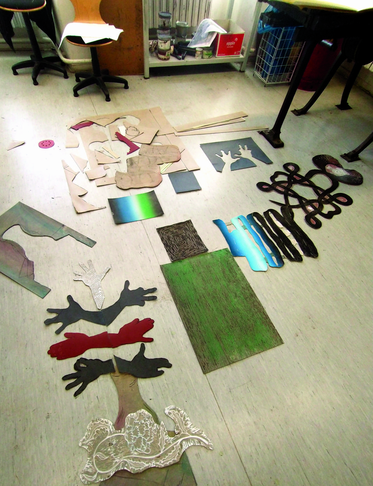

Roger Paulino
As the child of immigrants growing up in the fractured society of South Africa's apartheid regime, I was introduced to drawing at an early age by watching the Khoi-San people paint African landscapes onto animal hides from the savanna. Due to the prevailing violence, my family relocated to the island of Madeira, where I experienced a simple island lifestyle and traditional farming methods. I also came into contact with the skate subculture; this street culture served as my initial gateway to art.
My work draws from diverse sources and manifests in a wide variety of forms. As an artist, I explore life's mysteries and the small, chance occurrences that shape our perception of reality. I take particular pleasure in recontextualizing everyday objects or even iconic motifs, whether through wordplay in titles or the specific arrangement of the depicted subjects. Historical facts, clichés, and the randomness of life serve as sources of inspiration that structure my visual narratives.
